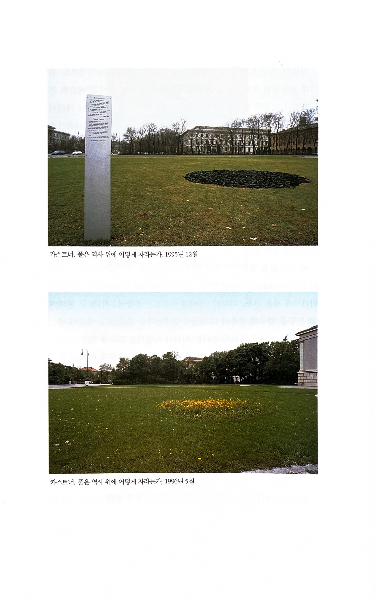

풀은 역사 위에 어떻게 자라는가
2025.12

1933년 5월 10일 밤 11시 30분. 약 오만여명의 나찌 추종자들이 뮌헨의 쾨니히 광장(Königsplatz)에 모여 거대한 화형식을 거행했다. 오늘날 고전박물관 자리 앞의 잔디밭에서 나찌에 의해 퇴폐적이라고 낙인 찍힌 작가들의 책들이 한데 불살라진 것이다. 그러나 "책이 타는 곳에서는 사람들도 불태워진다"라고 시인 하이네가 말했듯이 이는 단지 서곡에 지나지 않았다. 1935년 나찌는 화강암 석판들로 왕의 광장에 소위 '영광의 사원'을 세웠고 잇달아 제3제국의 지도하에 40여 개의 행정기관들이 부근에 들어섰다. 뮌헨은 당시 나찌 운동의 수도가 된 것이다. 독일 공포정치의 진원지를 상기시키는 건축물은 오늘날 아무 데도 남아 있지 않다…… 1995년 11월 9일 미술가 볼프람 카스트너(Wolfram Kastner)는 나찌가 책을 태웠던 바로 그 광장에서 사람들에게 과거를 상기시키기 위해 잔디를 태웠다.
카스트너의 계획은 보수적인 시 당국의 반대 —— 시의 재산인 광장의 잔디를 함부로 훼손시키면 안 된다는 —— 에 부딪혀 한때 좌절될 위기를 겪었다. 그러나 독일작가동맹, 출판인조합, 서적소매상들 및 교사들과 학생들의 항의로 시 당국의 승인을 얻기에 이른다.

12월 아름다운 안방 시계

송구영신도시 카운트다운